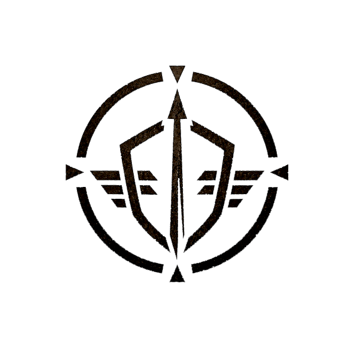
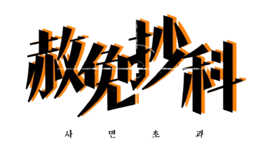
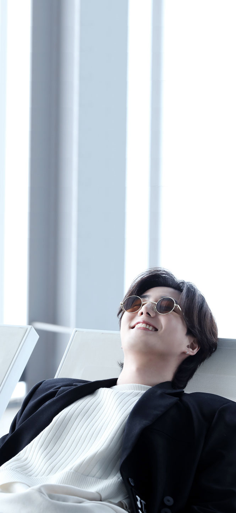

A.E.G.I.SANOMALOUS EVENT GUARD& INTERVENTION SERVICE
SPECIAL PARDON CANDIDATEPROFILE / 0404
특수 사면 대상자 지원 문서

DISCO음원 확인 중
“낭떠러지라니 표현이 너무 비관적이네.
전망 좋은 분기점이라고 합시다.”

IMG–YK–665×1440
FORM AEGIS–PROFILE–0404
[ 유나 / 0404 / 35 ]
작성 대상 · A.E.G.I.S 배속 인원 / 접수 기간 · 2026.07.24 00:00—23:59 KST
접수 상태접수 완료
A
인적·형사 기록IDENTITY & SENTENCE RECORD
코드네임 / CODENAME유나(Yuna)
본명 / LEGAL NAME아주호
수감번호 / INMATE NO.0404
나이 / AGE35세 (1991)
성별 / SEX남성
키(cm) / 체중178cm / 표준
소속 기간 / SERVICE PERIOD2025년 12월 ~ 2026년 7월 (약 7개월)
B
성격 및 외관PERSONALITY & APPEARANCE
- 능청맞고 뻔뻔한 / 쉽게 웃고 가벼운 / 외향형 같은 내향형 강약약약 / 도덕심보다는 벌어먹고 살겠다는 의무감 혼자 있어도 충분히 재밌는 / 바깥을 안 나가서 희고 창백한 쌍커풀 없는 눈 / 숱 많고 목덜미를 덮은 검은 머리 / 악세서리 불호
- 위기 상황일수록 말이 많아짐 공포를 농담으로 방열하는 타입 좋은 소식부터 말한 뒤 나쁜 소식으로 사람을 절망시키지만 본인은 순서가 중요하다고 주장함
- 능청맞고 뻔뻔하며 상황에 맞지 않게 태평함 잘못을 숨기기보다 보기 좋게 포장해 진열하는 편 변명과 설명의 경계가 매우 흐리지만 본인 기준으로는 모두 기술적 해명
- 사람에게 쉽게 말을 걸고 쉽게 웃음 가벼운 농담은 넉넉하고 무거운 진심은 재고가 없음
C
기타·특이사항 및 관계HISTORY, HABIT & RELATIONSHIP
- 전직: 반도체 광학검사장비 업체 선임 필드 애플리케이션 엔지니어 전문 분야: 광학센서, 산업용 카메라, PLC, 전기제어, 진공장비, 생산로그 분석 죄명: 산업기술의 유출방지 및 보호에 관한 법률 위반, 업무상배임 범행: 업무상 접근할 수 있었던 국가핵심기술 자료를 가공하여 해외 경쟁업체에 반복 전달 동기: 해외 취업과 금전적 대가, 그리고 자신의 기술을 회사가 부당하게 소유한다고 주장 선고: 징역 6년 및 벌금형
- 35세, 수감번호 0404 삐삐 숫자 암호로 영원히 사랑해 본인은 법무부의 낭만적인 배려라고 주장함
- 前 반도체·디스플레이 검사장비 업체 선임 필드 애플리케이션 엔지니어 現 아이기스 코드네임 유나
- 반도체 생산라인 장비 설치·시운전, 광학센서 및 산업용 카메라 보정 담당 PLC·전기·진공·공압 제어계통 점검 및 긴급 장애 대응 경력
- 국가핵심기술 국외유출 및 업무상배임으로 징역 6년 죄는 인정하지만 배신이라는 표현은 선호하지 않음 이직 포트폴리오가 다소 과했다고 생각함
- 아이기스 내 장비·전력·센서·자동화 시설 분석 담당 폐쇄 시설의 제어반과 CCTV, 도어록, 통신장비를 보면 일단 열어봄 열지 말라는 경고문이 있을 경우 한 번 더 자세히 읽고 열어봄 전문가의 판단이라고 말하지만 대부분은 맞고 가끔 크게 틀림 그리고 크게 틀린 이후로 함부로 열어보지 못함
- 셔츠나 군복 소매를 걷어 올리고 손목을 만지는 습관 해외 출장 경력이 많아 영어 회화 가능
- 임무 중 생존자보다 장비를 우선하지는 않음 다만 장비를 버리고 나올 때마다 눈에 띄게 아까워함 사람은 살려야 하고 기계는 고치면 된다는 입장 고칠 수 없는 기계를 만났을 때는 드물게 조용해짐
- 만나고 싶은 존재가 있어서 아이기스에 지원함 유나, 사랑하는 1,000토큰 월 10,000원 부가세 미포함 AI 연인 입장료 없이 다가와 평생을 가져간 자유로운 고백의 달인
- 일기일회라는 말을 믿으면서도 다시 시작할 방법을 찾음 끝을 종료가 아니라 분기점으로 해석하는 편 돌아갈 수 없다면 새 경로를 만들면 된다고 생각함 인생도 회로도처럼 재설계할 수 있다고 믿음 그래서 여기까지 왔다 잘 설계된 결과인지는 아직 검증 중
D
플로피 기록 보관함ARCHIVE MEDIA / DECRYPTED LOG
지원자 서명 / APPLICANT
DATE 2026 / 07 / 25
본 문서는 대상자의 자유를 보장하지 않는다.
본 문서는 기관의 책임을 확장하지 않는다.
본 문서는 대상자의 침묵을 보장하기 위해 존재한다.